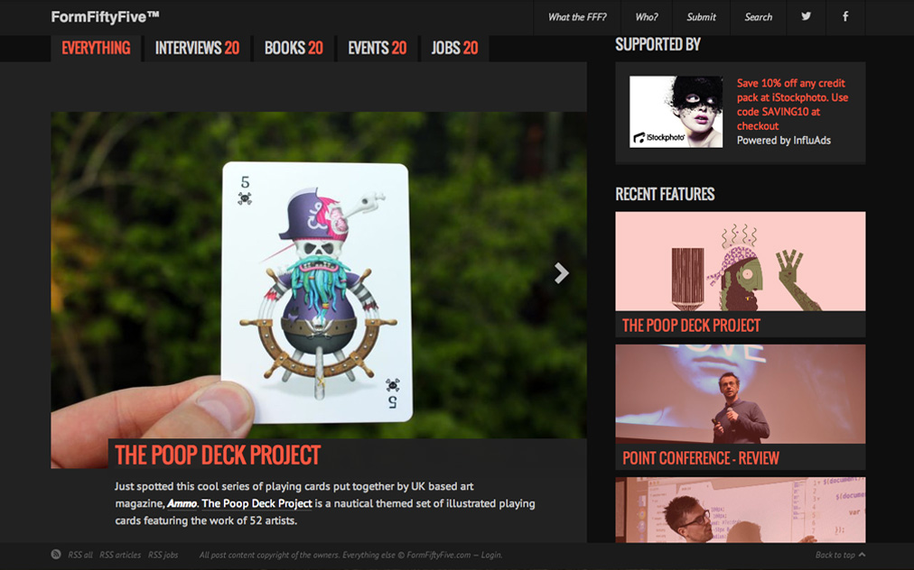

Latest publications
Fast Company:
Can An App Save London From Its Parking Nightmare?
Wired:
Ford Thinks a Simple App Can Cure the Headache of Parking,
Computer Arts: Logo takeover launch, March 2016
FormFiftyFive: 21st May 2013
Web Designer Magazine: Issue 209, May 2013
See all publications
Clippings
Latest awards
Frēsh, 2019: Carbon Award (Editorial Design) for
Micro but Many
The Webby Awards, 2019: Honoree (Weird category) for
Micro but Many
The Lovie Awards, 2018: Bronze Winner (Weird &
Experimental category) for Micro but Many
Fast Company Innovation by Design Awards, 2018: Finalist
(Experimental category) for
The Future Of External Vehicular Sound
BIMA 100, 2018: Top 100 UK Design Influencer, Design Star
See all awards

Frēsh, February 2018. Humanising Autonomy book with two
Carbon Awards in the Product &
Industrial and Information & UI categories.
BIMA 100, March 2018. Design Star.
FastCo Magazine, October 2015. The cluster concept wins two
Innovation by Design Finalist
Awards in the Experimental and
Data Visualisation categories. Nice spread, glad I sent those
high-res images they asked for.

FormFiftyFive. Features Poop Deck.
My recent trip to Seattle where I got to show Valve (Half-Life, Portal,
Steam) my portfolio.
Visual Storytelling by Gestalten. Features Carbon Cycle.
Orange creatures take over guardian.co.uk
Prince charles playing Greenhouse Effect.
Publications
Fast Company: Can An App Save London From Its Parking
Nightmare? March 2016
Wired: ord Thinks a Simple App Can Cure the Headache of
Parking, FMarch 2016
Computer Arts: Logo takeover launch, March 2016
FormFiftyFive: 21st May 2013
Web Designer Magazine: Issue 209, May 2013
Computer Arts: The Redesign Issue (#213), May 2013
Computer Arts: The Designer Career Handbook, August 2012
iheartlogos:Volume 3
Design Book of the Year: Volume 5
Good Idea Two: Hightone, ISBN 978-986-88678-0-2
Special Materials & Technology in Graphic Design: Dopress
Web Designer Magazine: Issue 195, April 2012
Cause and Effect: Gestalten, ISBN 978-3-89955-443-4
Visual Storytelling: Gestalten, ISBN 978-3-89955-375-8
Design Week: 13th April 2012
Chois Gallery: Volume 15, ISBN 97816117502-1-8 Wired.co.uk:
Artbox Magazine: Issue 17, November 2011
Web Designer Magazine: Issue 187, /ins> September 2011
Lovely Package: 19th August 2011
Design Week: Volume 26, number 21 – 26th May 2011
Logo Nest: zVolume 2
Logo Nest: Volume 1, ISBN 978-86-7542-091-0
Design Week: 8th February 2010
The Drum: December 2009
Creative Review: November 2009
Flashfolios: Taschen, ISBN 978-3836504980
Images: RotoVision, ISBN 978-2940361472
Kotaku: 29th August 2007
YCN Book 06/07: YCN
Awards
Fast Company: Can An App Save London From Its Parking
Nightmare? March 2016
Wired: ord Thinks a Simple App Can Cure the Headache of
Parking, FMarch 2016
Computer Arts: Logo takeover launch, March 2016
FormFiftyFive: 21st May 2013
Web Designer Magazine: Issue 209, May 2013
Computer Arts: The Redesign Issue (#213), May 2013
Computer Arts: The Designer Career Handbook, August 2012
iheartlogos:Volume 3
Design Book of the Year: Volume 5
Good Idea Two: Hightone, ISBN 978-986-88678-0-2
Special Materials & Technology in Graphic Design: Dopress
Web Designer Magazine: Issue 195, April 2012
Cause and Effect: Gestalten, ISBN 978-3-89955-443-4
Visual Storytelling: Gestalten, ISBN 978-3-89955-375-8
Design Week: 13th April 2012
Chois Gallery: Volume 15, ISBN 97816117502-1-8 Wired.co.uk:
Artbox Magazine: Issue 17, November 2011
Web Designer Magazine: Issue 187, /ins> September 2011
Lovely Package: 19th August 2011
Design Week: Volume 26, number 21 – 26th May 2011
Logo Nest: zVolume 2
Logo Nest: Volume 1, ISBN 978-86-7542-091-0
Design Week: 8th February 2010
The Drum: December 2009
Creative Review: November 2009
Flashfolios: Taschen, ISBN 978-3836504980
Images: RotoVision, ISBN 978-2940361472
Kotaku: 29th August 2007
YCN Book 06/07: YCN